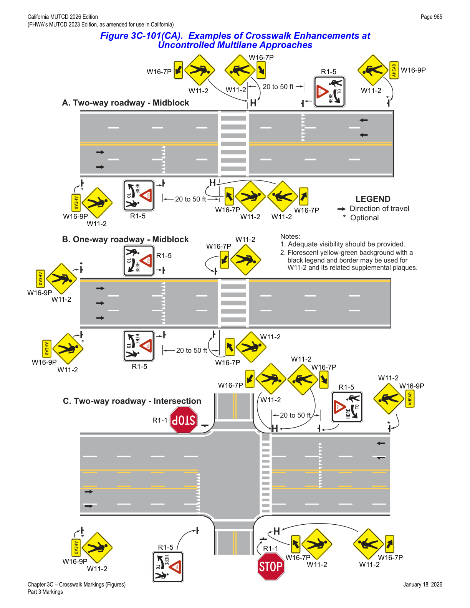
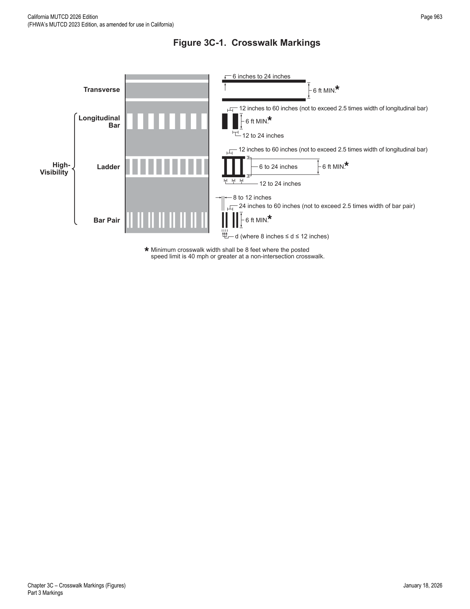
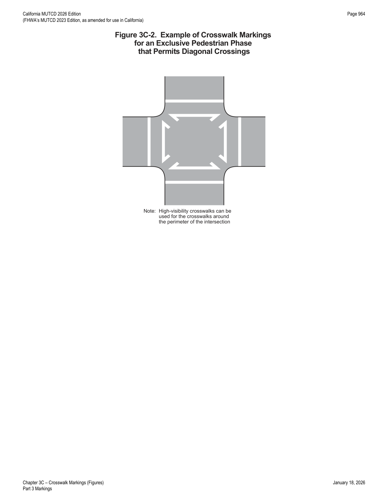

Part 3 · Markings · Chapter 3C
Crosswalk Markings
Design and application criteria for transverse-line and high-visibility crosswalk markings, uncontrolled-crossing engineering studies, and crosswalk treatments at circular intersections, diverging diamond interchanges, and pedestrian refuge islands.
3C.01General
Support — Background/Explanatory
- 01Crosswalk markings provide guidance for pedestrians who are crossing roadways by defining and delineating paths on approaches to and within signalized intersections, and on approaches to other intersections where traffic stops.
- 02In conjunction with signs and other measures, crosswalk markings help to alert road users of a designated pedestrian crossing point across roadways at locations that are not controlled by traffic control signals or STOP or YIELD signs.
- 03At non-intersection locations, crosswalk markings legally establish the crosswalk.
- 04Detectable warning surfaces mark boundaries between pedestrian and vehicular ways where there is no raised curb. Detectable warning surfaces are typically installed where curb ramps are constructed at the junction of sidewalks and the roadway or shoulder, for marked and unmarked crosswalks. Detectable warning surfaces contrast visually with adjacent walking surfaces, either light-on-dark, or dark-on-light. The U.S. Department of Justice 2010 ADA Standards for Accessible Design, September 15, 2010, 28 CFR 35 and 36, Americans with Disabilities Act of 1990 contains specifications for the design of detectable warning surfaces.
3C.02Application of Crosswalk Markings
Guidance — Recommended Practice
- 01At locations controlled by traffic control signals, crosswalk markings should be installed.
Option — Permissive
- 02Crosswalk markings may be omitted if engineering judgment indicates they are not needed to direct pedestrians to the proper crossing path(s).
- 02aPedestrian crosswalk markings may be placed at intersections, representing extensions of the sidewalk lines, or on any portion of the roadway distinctly indicated for pedestrian crossing. Refer to CVC § 275.
Guidance — Recommended Practice
- 03On approaches controlled by STOP or YIELD signs, crosswalk markings should be installed where engineering judgment indicates they are needed to direct pedestrians to the proper crossing path(s).
- 04At uncontrolled approaches, an engineering study should be performed before a marked crosswalk is installed. The following criteria should be considered: (A) Total number of approach lanes, (B) the presence of a median, (C) the distance from adjacent signalized intersections or other controlled crossings, (D) projected pedestrian and bicyclist volumes, (E) pedestrian and bicyclist paths of travel, (F) pedestrian ages and abilities, (G) pedestrian and bicyclist delays, (H) location or frequency of public transit stops, (I) average daily traffic (ADT), (J) speed limit or the 85th-percentile speed, (K) the horizontal and vertical geometry of the crossing location, (L) the possible consolidation of multiple crossing points, (M) the availability of street lighting, and (N) other appropriate factors.
Standard — Mandatory Requirement
- 05Crosswalk markings shall be provided at legally established crosswalks at non-intersection locations.
Guidance — Recommended Practice
- 06The installation of other traffic control devices and other measures designed to reduce traffic speeds, shorten crossing distances, enhance driver awareness of the crossing, and/or provide active warning of pedestrian presence, should be considered in addition to a new marked crosswalk and signs across an uncontrolled roadway where any of the following conditions exist: (A) the roadway has four or more lanes of travel without a raised median or pedestrian refuge island and an ADT of 12,000 vehicles per day or greater; or (B) the roadway has four or more lanes of travel with a raised median or pedestrian refuge island and an ADT of 15,000 vehicles per day or greater; or (C) the posted speed limit is 40 mph or greater; or (D) a crash study reveals that multiple-threat crashes are the predominant crash type on a multi-lane approach; or (E) when adequate visibility cannot be provided by parking prohibitions.
- 06aIf a marked crosswalk exists across an uncontrolled roadway where the speed limit exceeds 40 mph and the roadway has four or more lanes of travel and an ADT of 12,000 vehicles per day or greater, advanced yield lines with associated Yield Here to Pedestrians (R1-5, R1-5a) signs should be placed 20 to 50 ft in advance of the crosswalk, adequate visibility should be provided by parking prohibitions, pedestrian crossing (W11-2) warning signs with diagonal downward pointing arrow (W16-7P) plaques should be installed at the crosswalk, and a high-visibility crosswalk marking pattern should be used (see Figure 3C-101(CA)).
Support — Background/Explanatory
- 07Chapter 4J contains information on pedestrian hybrid beacons.
- 08Chapter 4L contains information on rectangular rapid flashing beacons.
- 09Section 4S.03 contains information regarding Warning Beacons to provide active warning of a pedestrian's presence.
- 10Section 4U.02 contains information regarding In-Roadway Warning Lights at crosswalks.
- 11Chapter 7C contains information on school crosswalks.
- 12Chapter 7D contains information regarding school crossing supervision.
- 13Section 9E.13 contains information on crosswalk markings for shared-use path crossings.

In practice: the 12,000/15,000 ADT thresholds and the four-lanes-without-a-median trigger are the key screening numbers engineers cite most often when a proposed uncontrolled crosswalk needs supplemental treatments beyond signs and markings alone.
3C.03Design of Crosswalk Markings
Support — Background/Explanatory
- 01Section 3B.19 contains information regarding placement of stop line markings and yield line markings near crosswalk markings.
- 02Crosswalk markings are classified as either transverse line or high-visibility. Transverse crosswalk markings consist of two transverse lines. High-visibility markings consist of longitudinal lines parallel to traffic flow with or without transverse lines. Figure 3C-1 presents crosswalk marking designs.
Standard — Mandatory Requirement
- 03Crosswalk markings shall be white. When used, transverse lines shall not be less than 6 inches or greater than 24 inches in width.
Support — Background/Explanatory
- 04The allowable upper limit approaching 24 inches for the width of the transverse lines is normally applied where no stop or yield line is used in advance of the crosswalk or when approach speeds exceed 35 miles per hour.
Standard — Mandatory Requirement
- 05Except as provided in Paragraph 6 of this Section, the minimum width of a marked crosswalk shall be 6 feet.
- 06At a non-intersection crosswalk where the posted speed limit is 40 mph or greater, the minimum width of the crosswalk shall be 8 feet.
Guidance — Recommended Practice
- 07High-visibility crosswalk markings (such as shown in Figure 3C-1) and warning signs (see Section 2C.55) should be installed for all crosswalks at non-intersection locations.
- 08Added visibility should be provided by parking prohibitions on the approach to marked crosswalks at non-intersection locations.
Standard — Mandatory Requirement
- 09Where curb ramps are provided, crosswalk markings shall be located so that the curb ramps are within the extension of the crosswalk markings.
Guidance — Recommended Practice
- 10Transverse line crosswalk markings should extend across the full width of pavement or to the edge of the intersecting crosswalk to discourage diagonal walking between crosswalks.
Support — Background/Explanatory
- 11Provisions for aesthetic treatments for the interior portion of a legally-established crosswalk are contained in Section 3H.03.
Standard — Mandatory Requirement
- 12If paving materials are used to function as the white transverse lines to establish a marked crosswalk, white additives shall be part of the mixture to produce a white surface. The white paving materials shall be retroreflective.
- 13Crosswalk markings near schools shall be yellow as provided in CVC § 21368. Refer to Part 7.
Guidance — Recommended Practice
- 14In general, crosswalks should not be marked at intersections unless they are intended to channelize pedestrians. Emphasis is placed on the use of marked crosswalks as a channelization device.
- 15The following factors may be considered in determining whether a marked crosswalk should be used: (A) vehicular approach speeds from both directions, (B) vehicular volume and density, (C) vehicular turning movements, (D) pedestrian volumes, (E) roadway width, (F) day and night visibility by both pedestrians and road users, (G) channelization is desirable to clarify pedestrian routes for sighted or sight impaired pedestrians, (H) discouragement of pedestrian use of undesirable routes, and (I) consistency with markings at adjacent intersections or within the same intersection.
Option — Permissive
- 16Crosswalk markings may be established between intersections (mid-block) in accordance with CVC § 21106(a).
Guidance — Recommended Practice
- 17Mid-block pedestrian crossings are generally unexpected by the motorist and should be discouraged unless, in the opinion of the engineer, there is strong justification in favor of such installation. Particular attention should be given to roadways with two or more traffic lanes in one direction as a pedestrian may be hidden from view by a vehicle yielding the right-of-way to a pedestrian.
Option — Permissive
- 18When diagonal or longitudinal lines are used to mark a crosswalk, the transverse crosswalk lines may be omitted.
Standard — Mandatory Requirement
- 19However, when the factor that determined the need to mark a crosswalk is the clarification of pedestrian routes for sight-impaired pedestrians, the transverse crosswalk lines shall be marked.
Option — Permissive
- 20At controlled approaches, limit lines (stop lines) help to define pedestrian paths and are therefore a factor the engineer may consider in deciding whether or not to mark the crosswalk.
- 21Where it is desirable to remove a marked crosswalk, the removal may be accomplished by repaving or surface treatment.
Guidance — Recommended Practice
- 22A marked crosswalk should not be eliminated by allowing it to fade out or be worn away.
Support — Background/Explanatory
- 23The worn or faded crosswalk retains its prominent appearance to the pedestrian at the curb, but is less visible to the approaching road user.
Standard — Mandatory Requirement
- 24Notification to the public shall be given at least 30 days prior to the scheduled removal of an existing marked crosswalk. The notice of proposed removal shall inform the public how to provide input related to the scheduled removal and shall be posted at the crosswalk identified for removal. Refer to CVC § 21950.5.
Option — Permissive
- 25Signs may be installed at or adjacent to an intersection directing that pedestrians shall not cross in a crosswalk indicated at the intersection in accordance with CVC § 21106(b).
- 26White PED XING pavement markings may be placed in each approach lane to a marked crosswalk, except at intersections controlled by traffic signals or STOP or YIELD signs.

3C.04Transverse Line Crosswalks
Guidance — Recommended Practice
- 01Transverse line crosswalk markings should be limited to locations controlled by traffic control signals or on approaches controlled by STOP or YIELD signs.
Support — Background/Explanatory
- 02Transverse line crosswalk marking design consists of two parallel transverse lines (see Figure 3C-1).
- 03Transverse line crosswalk markings can provide benefits to crosswalk operations including: (A) define where the channelization of pedestrians or other non-motorized users is necessary to facilitate crossing the roadway; (B) alert motorists to the location of where pedestrians and other non-motorized users might be expected when crossing the roadway; (C) emphasize a crosswalk at a controlled intersection; and (D) fulfill a legal need to mark the crosswalk.
3C.05High-Visibility Crosswalks
Option — Permissive
- 01High-visibility crosswalk markings may be used where additional conspicuity is desired for a crosswalk over transverse line crosswalk markings.
Guidance — Recommended Practice
- 01aThis type of marking should be used at locations where substantial numbers of pedestrians cross without any other traffic control device, at locations where physical conditions are such that added visibility of the crosswalk is desired, or at places where a pedestrian crosswalk might not be expected.
Support — Background/Explanatory
- 02High-visibility crosswalk markings include the longitudinal bar, ladder, and bar pair designs (see Figure 3C-1).
- 03High-visibility crosswalk markings can provide benefits to crosswalk operations including: (A) providing greater detection distances for the approaching motorist; (B) emphasizing a crosswalk where substantial numbers of pedestrians cross without any other traffic control device; (C) emphasizing a crosswalk at an uncontrolled approach; (D) emphasizing the location where a high number of conflicts between turning motorists and users of the crosswalk are expected; (E) improving visibility of the crosswalk location for otherwise difficult to detect pedestrians or other non-motorized users of the crosswalk; and (F) emphasizing a school crossing.
Standard — Mandatory Requirement
- 04The minimum number of individual longitudinal elements to establish a high-visibility crosswalk shall be three. For the bar pair crosswalk design (see Section 3C.08), a coupling set of two longitudinal bars shall be considered to be one individual longitudinal element.
Guidance — Recommended Practice
- 05The dimensions of the individual longitudinal element and the lateral spacing between subsequent individual longitudinal elements for a high-visibility crosswalk should be uniform when establishing the crosswalk.
- 06The dimensions of the individual longitudinal element and the lateral spacing between subsequent individual longitudinal elements for a high-visibility crosswalk should be uniform when establishing separate crosswalks on multiple approaches to the same intersection and on both sides of a median refuge if one is present.
- 07The individual longitudinal elements of a high-visibility crosswalk should be angled such that they are parallel to the travel path of approaching traffic.
Option — Permissive
- 08The lateral spacing between longitudinal elements may be staggered to avoid wheel paths, center lines, and lane lines.
3C.06Longitudinal Bar Crosswalks
Support — Background/Explanatory
- 01The longitudinal bar crosswalk marking design (see Figure 3C-1) provides for improved detection and recognition over the transverse line crosswalk for people with low vision and cognitive impairments.
Standard — Mandatory Requirement
- 02The width of an individual longitudinal bar shall not be less than 12 inches or greater than 24 inches.
- 03The lateral spacing between subsequent longitudinal bars shall not be less than 12 inches or greater than 60 inches. The lateral spacing of the longitudinal bars shall not exceed 2.5 times the width of a longitudinal bar.
3C.07Ladder Crosswalks
Support — Background/Explanatory
- 01Ladder crosswalks (see Figure 3C-1) implement a pattern where interior longitudinal bars and transverse lines are used to define the limits of the crosswalk.
- 02The ladder crosswalk marking design provides for improved detection and recognition over the transverse crosswalk for people with low vision and cognitive impairments.
- 03Since the longitudinal component of the ladder crosswalk marking design is similar to the benefits provided by the longitudinal bar crosswalk design, the ladder crosswalk design is normally used to discourage or prohibit diagonal walking between crosswalks.
Standard — Mandatory Requirement
- 04The transverse lines used to establish the limits of the ladder crosswalk shall not be less than 6 inches or greater than 24 inches in width.
- 05The width of an individual interior longitudinal bar shall not be less than 12 inches or greater than 24 inches.
- 06The lateral spacing between subsequent interior longitudinal bars shall not be less than 12 inches or greater than 60 inches. The lateral spacing of the interior longitudinal bars shall not exceed 2.5 times the width of an interior longitudinal bar.
Option — Permissive
- 07Where it might be necessary to alleviate a parallax phenomenon due to approaching roadway geometry that curves or to accommodate low approach angles of the approaching motorist, the interior longitudinal bars may be rotated up to 45 degrees to the transverse lines to remain parallel to approaching traffic.
3C.08Bar Pair Crosswalks
Support — Background/Explanatory
- 01Bar pair crosswalks (see Figure 3C-1) can provide the same benefits as other high-visibility crosswalk designs with the opportunity for less maintenance.
- 02Bar pair crosswalks can be useful in locations that are susceptible to slip and fall incidents exacerbated by extreme or inclement weather, or in locations where high motorcycle or bicycle use is expected in order to maximize wheel traction with the road surface.
Standard — Mandatory Requirement
- 03The width of an individual longitudinal bar that establishes one-half of the bar pair shall not be less than 8 inches or greater than 12 inches. The lateral spacing between successive individual longitudinal bars within the same bar pair shall be equal to the width of one longitudinal bar.
- 04The lateral spacing between subsequent longitudinal bar pairs shall not be less than 24 inches or greater than 60 inches, or 2.5 times the total width of a bar pair.
- 05Longitudinal bar pair crosswalks shall not be installed with accompanying transverse lines.
3C.09Crosswalk Markings at Circular Intersections
Standard — Mandatory Requirement
- 01Crosswalk markings shall not be provided to or from the central island of a roundabout.
Guidance — Recommended Practice
- 02If pedestrian facilities are provided, crosswalks should be marked across roundabout entrances and exits to indicate where pedestrians are intended to cross.
- 03On an approach to a circular intersection controlled by a YIELD sign and at uncontrolled exits, crosswalks should be a minimum of 20 feet from the edge of the circulatory roadway.
Support — Background/Explanatory
- 04Chapter 3D provides figures that illustrate examples of crosswalk markings for roundabouts.
3C.10Crosswalks for Exclusive Pedestrian Phases that Permit Diagonal Crossings
Option — Permissive
- 01When an exclusive pedestrian phase that permits diagonal crossing of an intersection is provided at a traffic control signal, a marking as shown in Figure 3C-2 may be used for the crosswalk.
Guidance — Recommended Practice
- 02The segments of the crosswalk marking that facilitate the diagonal crossing should not use high-visibility crosswalk markings.

3C.11Crosswalks at Diamond Interchanges with a Transposed Alignment Crossroad
Support — Background/Explanatory
- 01Diverging diamond interchanges, also known as double-crossover diamond interchanges, include directional crossovers on either side of the interchange that transpose the crossroad, which results in vehicles traveling on the left-hand side of the street or highway between the crossover intersections. The potential for altered travel paths for pedestrians and the associated, unique, operational aspects such as traffic approaching from unexpected directions and unfamiliar signal phasing schemes are important considerations.
Guidance — Recommended Practice
- 02If pedestrian facilities are provided, pedestrian crossing movements of the crossroads at a diverging diamond interchange should be marked at the crossover intersections where motor vehicle traffic becomes transposed.
- 03If pedestrian facilities are provided, crosswalks should be marked across ramp terminals at diverging diamond interchanges to indicate where pedestrians are intended to cross.
- 04Crosswalks across diverging diamond interchange ramps with yield controlled vehicle movements should be located a minimum of 20 feet from the edge of an intersecting ramp.
Support — Background/Explanatory
- 05Section 3B.31 contains information on markings, such as edge lines, lane lines, and lane-use arrows, for diverging diamond interchanges.
- 06Figure 3B-29 shows an example of pedestrian crossing locations at a diverging diamond interchange.
3C.12Pedestrian Islands and Medians
Support — Background/Explanatory
- 01Raised islands or raised medians of sufficient width that are placed in the center area of a street or highway can serve as a place of refuge for pedestrians who are attempting to cross at a midblock or intersection location. Center islands or medians allow pedestrians to find an adequate gap in one direction of traffic at a time, as the pedestrians are able to stop, if necessary, in the center island or median area and wait for an adequate gap in the other direction of traffic before crossing the second half of the street or highway. The U.S. Department of Justice 2010 ADA Standards for Accessible Design, September 15, 2010, 28 CFR 35 and 36, Americans with Disabilities Act of 1990 contains specifications for the design of detectable warning surfaces and provides technical requirements that can be used to determine the minimum width for accessible refuge islands.
★ Key Takeaways — Chapter 3C
- Crosswalk markings shall be white (except yellow near schools per CVC §21368); transverse lines run 6 to 24 inches wide, minimum crosswalk width is 6 feet (8 feet where the posted speed is 40 mph or greater at a non-intersection location).
- Four high-visibility patterns are defined with specific dimensions: longitudinal bar (12-24 in. wide, 12-60 in. spacing, capped at 2.5x width), ladder (adds 6-24 in. transverse lines), and bar pair (8-12 in. bars, 24-60 in. spacing, no transverse lines permitted).
- An engineering study weighing 14 listed factors (lanes, median, ADT, speed, sight distance, etc.) should precede any new marked crosswalk at an uncontrolled approach; roadways with 4+ lanes and ADT of 12,000 (no median) or 15,000 (with median/refuge), or speeds of 40 mph+, trigger consideration of supplemental treatments.
- Crosswalks are prohibited to/from the central island of a roundabout; at circular intersections and diverging diamond interchange ramps, crosswalks should be set back a minimum of 20 feet from the circulatory roadway or intersecting ramp edge.
- Removing an existing marked crosswalk requires 30 days' public notice (CVC §21950.5) and shall not be accomplished by letting the marking fade or wear away.